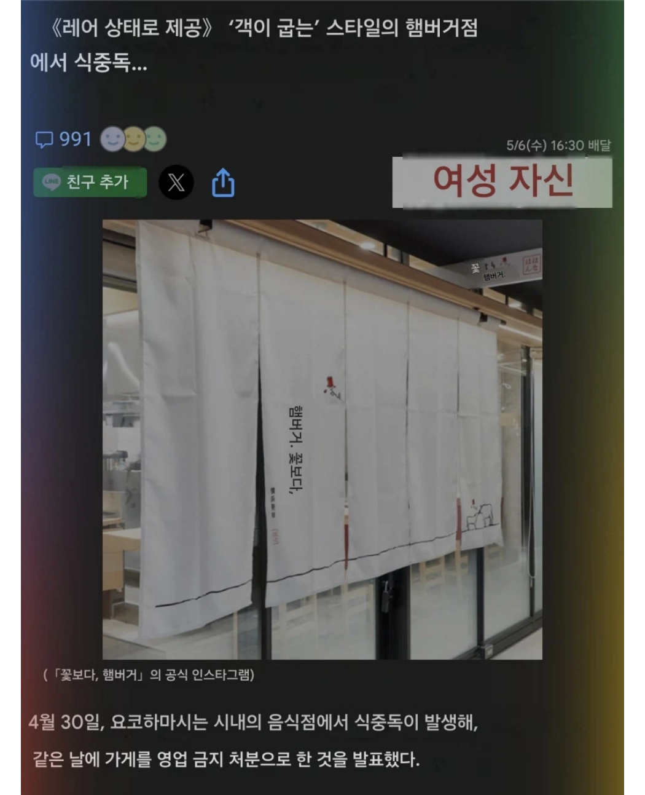

https://bbs.ruliweb.com/best/board/300143/read/76913113
이번에 삿포로에 오픈한
햄버그 셀프 구이집
안쪽까지안익은 햄버그를 직접 굽는식

예전에 다른지점에서 식중독이 발생해
영업금지처분당했던 적도있음
https://bbs.ruliweb.com/best/board/300143/read/76913113
이번에 삿포로에 오픈한
햄버그 셀프 구이집
안쪽까지안익은 햄버그를 직접 굽는식

예전에 다른지점에서 식중독이 발생해
영업금지처분당했던 적도있음
후쿠오카 갔을때 존맛이었는데 잘 익혀서 먹어야하나보네
키와미야 함바그 아니냐?
스톤에 익혀먹는거
규카츠도 조심혀
함버그는 냉장육으로 만든것도 푹 익혀먹어야됨?
돌판 같은 거 같이 줘서 거기에 굽는 건 먹어봤는데
갈은고기는 푹~~~~~ 익혀 먹어야 해.. 통고기 하고 달라..
이거 때문에 한해에도 몇명씩 사망자 나옴.
이게 "용혈성요독증후군" 이라고 부르는데 흔히들 "맥도날드 병" 이라고 불려
많은 햄버거 회사들이 이걸로 시비가 걸림.
한 10년 전쯤에 맛양값이라는 가게에서 함박스테이크랑 칼국수 먹은적 있음 근데 거기 함박스테이크가 속이 덜익었더라고.
같이먹은 친구는 괜찮았는데 난 그날 밤부터 속이 뒤집혀서 4일 정도 고생함.
그게 식중독 증상인지는 모르겠는데 몇주 있다가 다시 가보니까 가게가 없어졌더라.